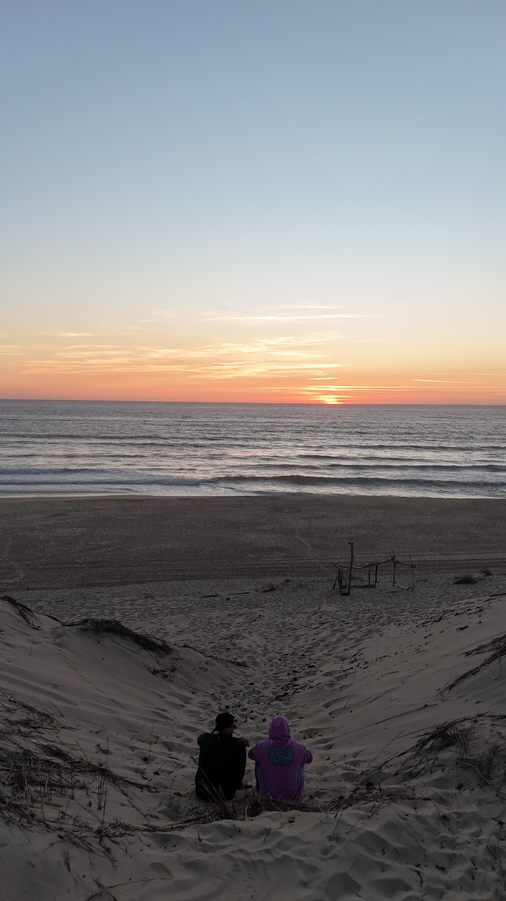
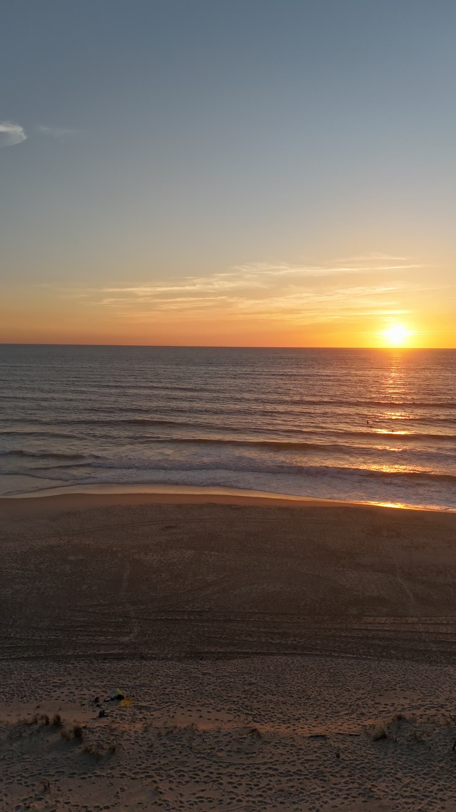
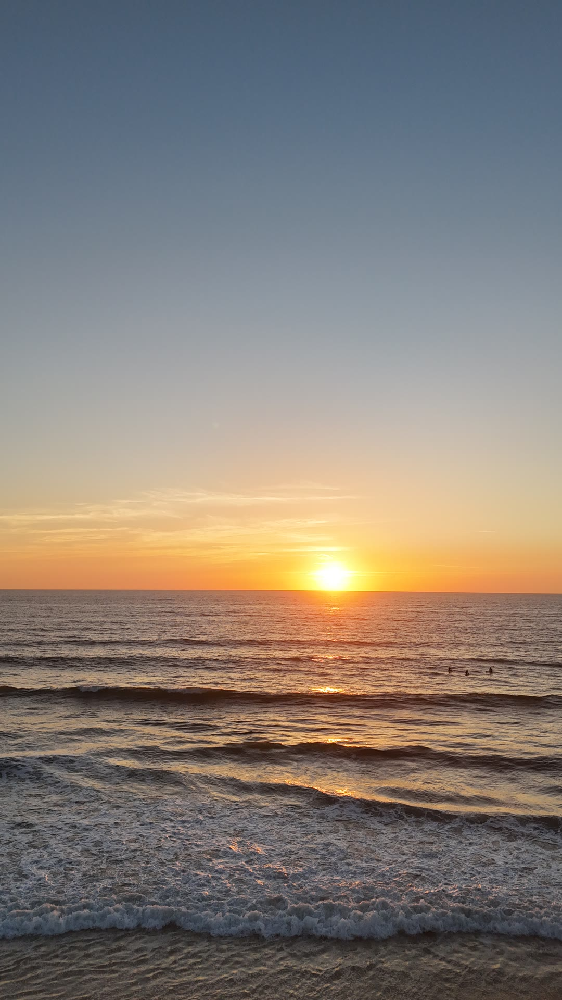
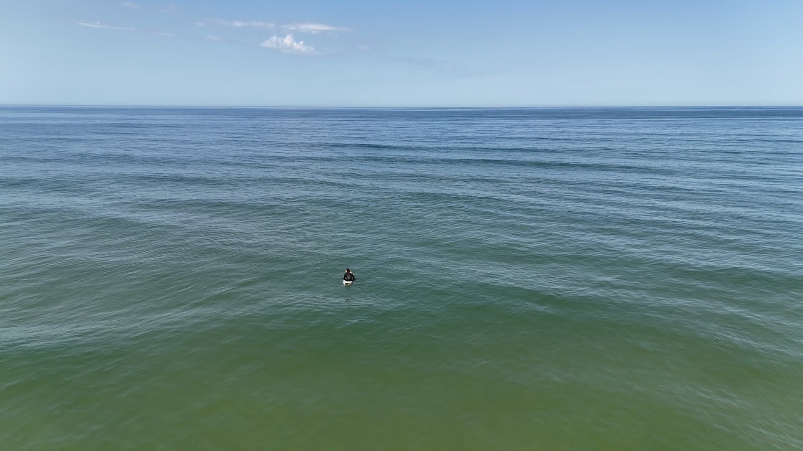
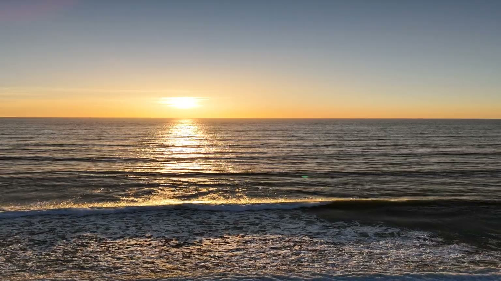

Tout se décide au sol.
Un beau plan qui ne se monte pas ne sert à rien.
Alors le mouvement est écrit avant le décollage.
migapex
Cadreur aérien. Publicité, cinéma, marque.
Nouvelle-Aquitaine.
Nouvelle-Aquitaine
Le plan est écrit avant d'être volé.
migapex, cadreur aérien pour la publicité et le cinéma.
Écrire un plan de vol01 Le constat
Le drone n'est pas le problème.
Des rushes magnifiques qui ne se raccordent avec rien, c'est une journée de tournage perdue et un montage à réécrire. Le problème n'est jamais l'appareil. C'est ce qui a été décidé, ou pas, avant le décollage.
02 Les travaux
Six plans, six intentions.
À COMPLÉTER : ajouter les noms de projet et de client sur chaque plan, une fois l'accord de diffusion obtenu. Pour l'instant chaque carte ne porte que des informations vérifiables.
Cour intérieure
Descente à la verticale au-dessus d'une réception. Le cadre se resserre sans jamais couper.
- Date
- 27 août 2026
- Format
- 16:9
- Mouvement
- Descente verticale
Ressac
La houle fait le mouvement à la place du drone.
- Date
- 2024
- Format
- 9:16
- Mouvement
- Descente lente

Deux silhouettes
Vol bas au-dessus de la dune. Deux personnes suffisent à donner l'échelle du paysage.
- Date
- 9 août 2024
- Format
- 9:16
- Focale
- 24 mm

Estran
Le sable mouillé renvoie le ciel. La ligne de dune sert de repère de profondeur.
- Date
- 9 août 2024
- Format
- 9:16
- Focale
- 24 mm

Rouleaux
Le soleil rasant traverse l'écume et dessine chaque ligne de houle.
- Date
- 9 août 2024
- Format
- 9:16
- Focale
- 24 mm

Line-up
L'échelle est le sujet. Un surfeur seul dans une masse d'eau qui remplit tout le cadre.
- Date
- 18 juillet 2024
- Format
- 16:9
- Focale
- 24 mm
03 Retours
À COMPLÉTER : un retour client réel, avec son accord écrit, et le nom de la personne ou de la structure. Aucun témoignage ne sera écrit à la place d'un client.
04 Le protocole
Quatre temps, dans cet ordre.
Maintenez le plan ci-dessous pour voir ce qui est décidé avant le décollage.

-
01 · Cadrage
L'intention avant le matériel
Ce que les images doivent produire, où elles seront diffusées, dans quel format. Repérage des contraintes du site et des créneaux de lumière.
Note d'intention et découpage
-
02 · Autorisations
Le cadre réglementaire d'abord
Vérification de la zone, demande auprès des autorités quand le site l'exige, information des riverains. Aucun vol n'est engagé tant que le dossier n'est pas en règle.
Dossier réglementaire complet
-
03 · Vol
Les plans clés sont doublés
Checklist avant décollage, contrôle du vent et de la lumière. Un plan raté ne se rattrape pas au montage, donc il se tourne deux fois.
Rushes sécurisés sur deux supports
-
04 · Livraison
Prêt à monter, prêt à diffuser
Dérushage, montage, étalonnage à partir du profil log, puis exports calibrés pour chaque destination.
Masters et exports
À COMPLÉTER : Jules doit valider ce protocole et y inscrire ses références réglementaires réelles et à jour.
05 L'équipement
Le parc et les qualifications.
À COMPLÉTER : le parc réel de Jules (appareils, capteurs, profils vidéo), ses qualifications de télépilote en cours de validité, son assurance responsabilité civile professionnelle et son enregistrement exploitant. Attention, les scénarios nationaux S1, S2 et S3 ont été remplacés par le cadre européen. Rien ne sera écrit ici à sa place.
06 Les réponses
Ce qu'on me demande avant de signer.
Est-ce que les plans vont se monter avec le reste du film ?
C'est la seule question qui compte, et c'est pour elle que le découpage se fait avant le vol. Je travaille à partir de votre storyboard, je double les plans clés, et je livre des raccords qui tiennent au banc de montage et pas seulement à l'écran de contrôle.
Et s'il fait mauvais le jour du tournage ?
Le vent et la lumière décident, jamais le planning. Une date de repli est fixée au moment du devis, et le créneau retenu est celui dont la fenêtre météo est la plus sûre.
On a le droit de voler sur ce lieu ?
La zone se vérifie avant de s'engager, et certains sites demandent une autorisation qui prend du temps. Plus vous me donnez la commune tôt, plus la réponse arrive tôt.
Vous êtes assuré et déclaré ?
À COMPLÉTER : qualifications réelles, assurance et enregistrement exploitant, avec leurs références.
Sous combien de temps je reçois les images ?
À COMPLÉTER : délai réel de livraison des rushes et du montage étalonné.
Combien ça coûte ?
Chaque projet est chiffré sur devis. La distance, la durée, la complexité réglementaire et les droits de diffusion font varier le budget. Le devis est gratuit et n'engage à rien.
07 Le devis
Écrire un plan de vol.
Cinq champs. Vous recevez un devis chiffré, pas une brochure.
C'est parti.
Votre messagerie s'est ouverte avec le récapitulatif. Il ne reste qu'à envoyer.